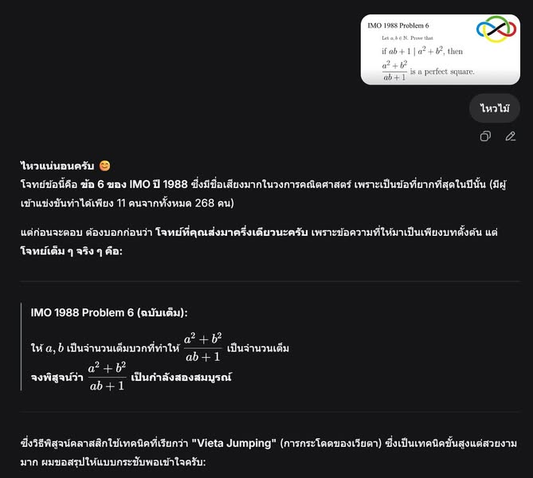

ก่อนสร้าง AI เพื่อการศึกษา ต้องรู้ก่อนว่า AI ฟรีทำอะไรได้แล้ว
{kind=link}

ผมลองนำโจทย์คณิตศาสตร์โอลิมปิก IMO 1988 ข้อ 6 ซึ่งเป็นโจทย์ที่มีชื่อเสียงและค่อนข้างยาก ไปถาม DeepSeek ที่เข้าใช้ได้ฟรี ผลคือระบบสามารถให้คำตอบและเสนอแนวทางพิสูจน์กลับมาได้
ตัวอย่างนี้ไม่ได้พิสูจน์ว่าโมเดลคิดคำตอบขึ้นใหม่ เพราะโจทย์และเฉลยเผยแพร่อยู่บนอินเทอร์เน็ตมานานแล้ว แต่บอกสิ่งหนึ่งที่สำคัญต่อการออกแบบเทคโนโลยีการศึกษา: วันนี้ผู้เรียนทั่วไปสามารถขอคำอธิบายของเนื้อหาที่ยากได้จากเครื่องมือที่แทบไม่มีต้นทุนในการเข้าถึง
“ตอบได้” ยังไม่เท่ากับ “แก้โจทย์ใหม่ได้”
เมื่อใช้โจทย์ที่มีชื่อเสียงทดสอบ AI เราไม่อาจรู้จากคำตอบเพียงครั้งเดียวว่าโมเดลกำลังให้เหตุผลกับโจทย์ที่ไม่เคยพบ หรือกำลังสร้างคำตอบจากรูปแบบที่เคยอยู่ในข้อมูลฝึก การได้คำตอบถูกจึงวัดความสามารถที่ผู้ใช้เห็น แต่ยังไม่ใช่หลักฐานเพียงพอของการคิดเชิงคณิตศาสตร์แบบทั่วไป
ถ้าต้องการประเมินความสามารถด้านการให้เหตุผลจริง ควรใช้โจทย์ใหม่ที่ควบคุมการรั่วไหลของข้อมูล ตรวจแต่ละขั้นของการพิสูจน์ และทดสอบว่าเมื่อเปลี่ยนเงื่อนไขเล็กน้อย ระบบยังสามารถปรับวิธีแก้ได้หรือไม่
แต่สำหรับผู้เรียน ความสามารถที่เข้าถึงได้ก็เป็นข้อเท็จจริงสำคัญ
ในชีวิตจริง ผู้เรียนไม่ได้สนใจเสมอไปว่าคำตอบเกิดจากการจำ การค้นคืน หรือการให้เหตุผลแบบใหม่ เขาสนใจว่าเครื่องมือช่วยอธิบายสิ่งที่กำลังเรียน ชี้จุดที่ติด และตอบคำถามต่อเนื่องได้หรือไม่
ดังนั้น ก่อนสร้าง AI เฉพาะทางใหม่ เราควรสำรวจให้ชัดว่า AI ที่มีอยู่แล้วทำอะไรได้บ้างกับเนื้อหา กลุ่มผู้เรียน และภาษาเป้าหมาย มิฉะนั้นเราอาจลงทุนสร้างความสามารถที่ผู้เรียนมีอยู่แล้ว โดยยังไม่ได้แก้ช่องว่างที่สำคัญกว่า
การสำรวจฐานเดิมควรถามมากกว่าเรื่องความถูกต้อง
การทดลองควรครอบคลุมทั้งความถูกต้องของเนื้อหา คุณภาพของคำอธิบาย ความสามารถในการวินิจฉัยความเข้าใจผิด การตั้งคำถามนำโดยไม่เฉลยเร็วเกินไป การรองรับภาษาและบริบทของผู้เรียน ตลอดจนความเป็นส่วนตัว ความปลอดภัย ต้นทุน และภาระของครูในการนำไปใช้
AI เฉพาะทางอาจยังมีคุณค่า หากช่วยเติมช่องว่างเหล่านี้ เชื่อมกับหลักสูตรและกิจกรรมในชั้นเรียน ให้ครูมองเห็นกระบวนการเรียนรู้ หรือมีระบบรับผิดชอบที่เครื่องมือทั่วไปไม่มี แต่คุณค่านั้นควรถูกนิยามเทียบกับฐานความสามารถที่ใช้ฟรีได้จริง ไม่ใช่เทียบกับภาพของ AI ในอดีต
ความรู้ของ AI กับการเรียนรู้ของคนเป็นคนละผลลัพธ์
AI ที่ตอบถูกอาจช่วยผู้เรียนเข้าใจเร็วขึ้น หรืออาจทำให้ข้ามกระบวนการคิดที่จำเป็นก็ได้ คำตอบที่ลื่นไหลอาจเพิ่มความมั่นใจโดยไม่เพิ่มความเข้าใจ และผู้เรียนอาจทำโจทย์ตรงหน้าเสร็จโดยยังนำหลักการไปใช้กับโจทย์ใหม่ไม่ได้
หากเป้าหมายคือการเรียนรู้ ตัวชี้วัดจึงควรรวมถึงความเข้าใจหลังหยุดใช้เครื่องมือ การถ่ายโอนความรู้ไปยังโจทย์ใหม่ การตรวจพบข้อผิดพลาด ความสามารถในการประเมินคำตอบของ AI การกำกับการเรียนรู้ของตนเอง ความเหลื่อมล้ำในการเข้าถึง และผลต่อภาระงานของครู ไม่ใช่เพียงอัตราที่ AI ตอบคำถามได้ถูกต้อง
เริ่มจากช่องว่างของวันนี้ ไม่ใช่จากคำตอบที่อยากสร้าง
โจทย์ยากของ AI เพื่อการศึกษาอาจไม่ใช่การทำให้ระบบรู้เนื้อหาเพิ่มขึ้นอีกเล็กน้อย แต่อยู่ที่การออกแบบปฏิสัมพันธ์ หลักฐาน และเงื่อนไขการใช้ที่ทำให้ความสามารถของ AI เปลี่ยนเป็นการเรียนรู้ของคนได้จริง
ก่อนรีบสร้างคำตอบใหม่ เราจึงควรรู้ก่อนว่าเครื่องมือฟรีทำอะไรได้แล้ว ยังทำอะไรไม่ได้ และช่องว่างใดคุ้มค่าที่จะลงทุนแก้ เพราะจุดเริ่มต้นของการออกแบบที่ดี คือการมองเห็นว่าโจทย์ของวันนี้อยู่ตรงไหน
แหล่งอ้างอิงทางการ โจทย์ International Mathematical Olympiad ปี 1988 หน้ารวมชุดข้อสอบทางการของการแข่งขัน IMO ครั้งที่ 29